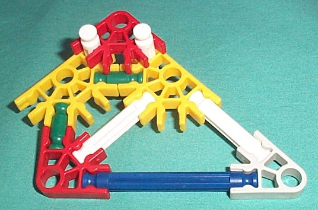
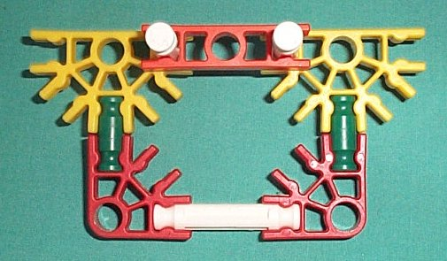
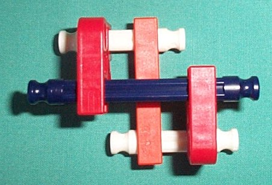

K'NEX is an extensible framework based construction system. Unlike Fischer Technik or Lego, which are based on interlocking blocks, K'NEX is more like Tinker Toys, consisting of struts and connectors which join together to form an open framework.
Each connector has a number of clips which can attatch axially to the end of a strut or perpendicularly along its length. We will refer to the number of clips as the arity of the connector.
| Color | Arity |
|---|---|
| dark gray | 1 |
| light gray | 2 |
| red | 3 |
| green | 4 |
| yellow | 5 |
| white | 8 |
| purple | 4 * |
| blue | 7 * |
Each connector has a "center" from which the clips extend. The center has a hole which is the same diameter as that of a strut, so that a strut will fit in the hole and can rotate or slide within it.
* The purple and blue connectors have a special slot in place of one of their clips. These slots can fit together so that two connectors can be put together perpendicularly to one another.
The struts vary in length. If we consider not the length of a strut itself, but the distance between the centers of two connectors attatched at each end of a strut, then we see that each strut is longer than the next shorter strut by a factor of the square root of two. We will refer to this measure as the effective length of a strut. We can associate with each strut its number in the sequence of struts when ordered by increasing length. We define the unit length as the distance between the centers of two connectors which are joined by a green strut, that is, the effective length of a green #1 strut.
| Number | Color | Effective Length |
|---|---|---|
| #1 | green | 1 |
| #2 | white | 1 v2 |
| #3 | blue | 2 |
| #4 | yellow | 2 v2 |
| #5 | red | 4 |
| #6 | gray | 4 v2 |
In the table above, we use "v2" to represent the square root of two, thus the notation "4 v2" represents four times the square root of two, approximately 5.66. The reason for this particular progression in lengths will be apparent shortly.
The fundamental basis of all K'NEX is that of the right isosceles triangle. This triangle has one ninty degree angle and two forty five degree angles. It's two legs are the same length. It's hypotenuse is the square root of two (approximately 1.41) longer than the length of one leg, hence the peculiar square root of two factor in the lengths of the struts.
The above picture illustrates that the effective length of a given numbered strut is twice that of a strut whose number is two less.
If two connectors are clipped to opposite sides of a strut, the distance between their centers is that for a green connector divided by the square root of two.
This is consistent with the sum of the effective lengths of two such overlaps being equal to the effective length of a white strut.
The effective length of an overlap connection is equal to the distance between the centers of two clips on opposite sides of a connector.

K'NEX
is a registered trademark of K'NEX Industries.
LEGO
is a registered trademark of the LEGO Group.
All other trademarks are owned by their respective owners,
blah, blah, blah.